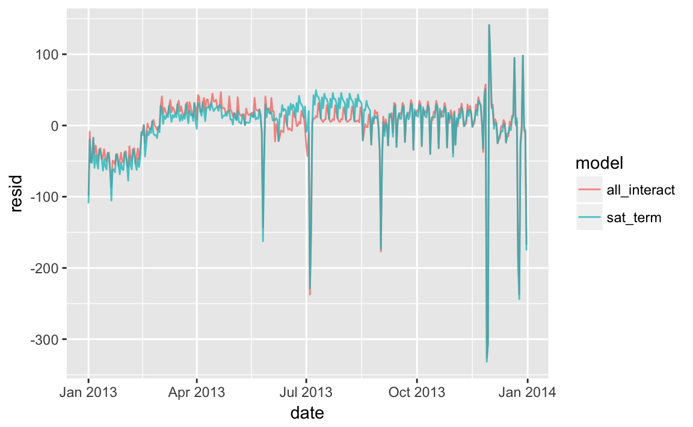
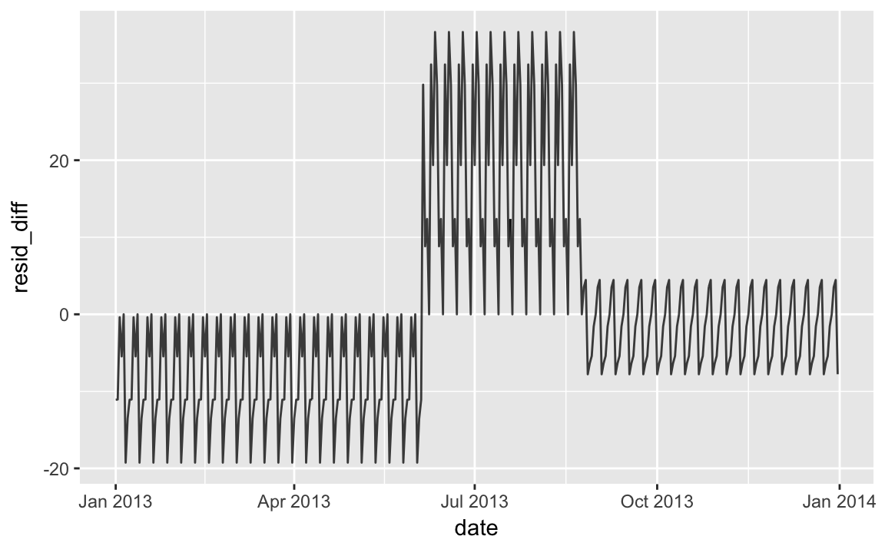
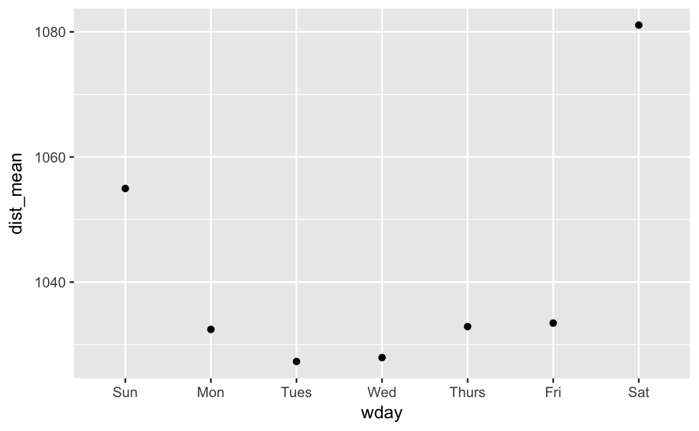
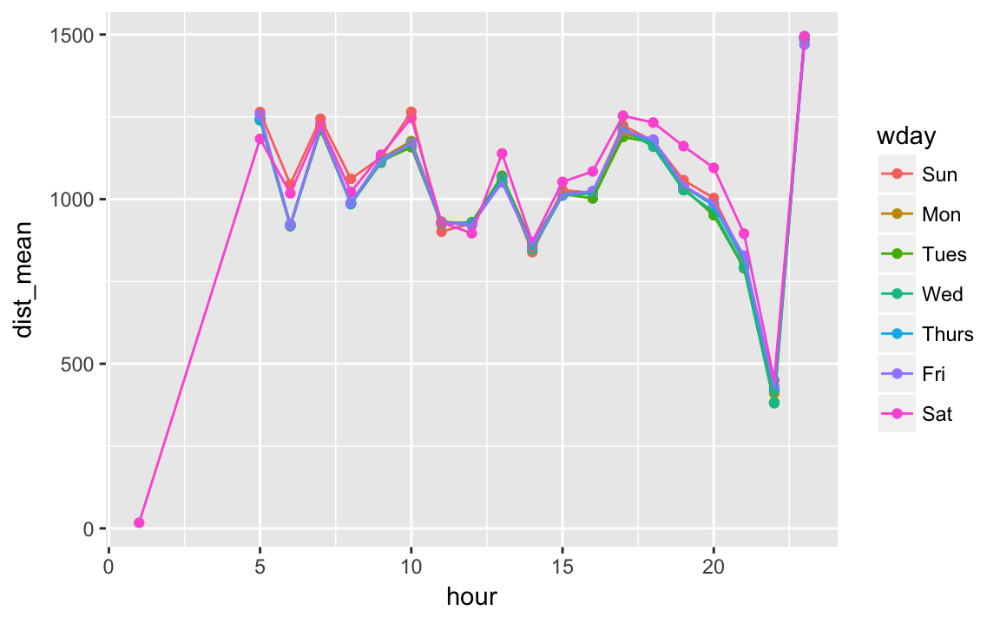
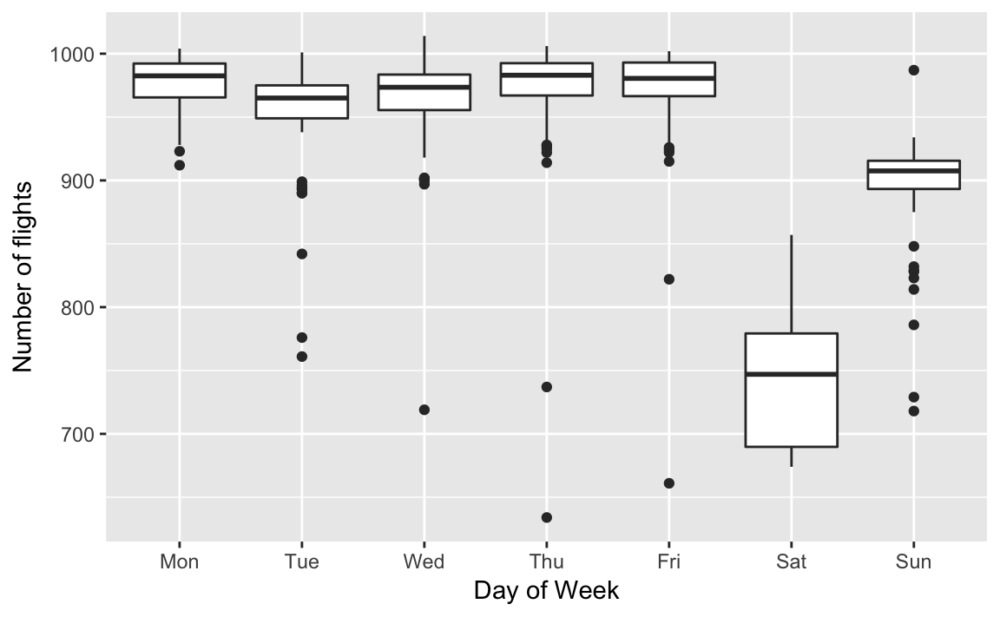

24 Model building
24.1 Introduction
24.2 Why are low quality diamonds more expensive?
diamonds2 <- diamonds %>%
filter(carat <= 2.5) %>%
mutate(lprice = log2(price), lcarat = log2(carat))
mod_diamond2 <- lm(lprice ~ lcarat + color + cut + clarity, data = diamonds2)Exercise 24.2.1
In the plot of lcarat vs. lprice, there are some bright vertical strips. What do they represent?
The distribution of diamonds has more diamonds at round or otherwise human friendly numbers (fractions).
Exercise 24.2.2
If log(price) = a_0 + a_1 * log(carat), what does that say about the relationship between price and carat?
An 1% increase in carat is associated with an \(a_1\)% increase in price.
Exercise 24.2.3
Extract the diamonds that have very high and very low residuals. Is there anything unusual about these diamonds? Are the particularly bad or good, or do you think these are pricing errors?
This was already discussed in the text. I don’t see anything either.
Exercise 24.2.4
Does the final model, mod_diamonds2, do a good job of predicting diamond prices? Would you trust it to tell you how much to spend if you were buying a diamond?
diamonds2 %>%
add_predictions(mod_diamond2) %>%
add_residuals(mod_diamond2) %>%
summarise(sq_err = sqrt(mean(resid^2)),
abs_err = mean(abs(resid)),
p975_err = quantile(resid, 0.975),
p025_err = quantile(resid, 0.025))
#> # A tibble: 1 x 4
#> sq_err abs_err p975_err p025_err
#> <dbl> <dbl> <dbl> <dbl>
#> 1 0.192 0.149 0.384 -0.369The average squared and absolute errors are \(2^0.19 = 1.14\) and \(2^0.10\) so on average, the error is \(\pm 10--15\)%. And the 95% range of residuals is about \(2^0.37 = 1.3\) so within \(\pm 30\)%. This doesn’t seem terrible to me.
24.3 What affects the number of daily flights?
library("nycflights13")
daily <- flights %>%
mutate(date = make_date(year, month, day)) %>%
group_by(date) %>%
summarise(n = n())
daily
#> # A tibble: 365 x 2
#> date n
#> <date> <int>
#> 1 2013-01-01 842
#> 2 2013-01-02 943
#> 3 2013-01-03 914
#> 4 2013-01-04 915
#> 5 2013-01-05 720
#> 6 2013-01-06 832
#> # ... with 359 more rows
daily <- daily %>%
mutate(wday = wday(date, label = TRUE))
term <- function(date) {
cut(date,
breaks = ymd(20130101, 20130605, 20130825, 20140101),
labels = c("spring", "summer", "fall")
)
}
daily <- daily %>%
mutate(term = term(date))
mod <- lm(n ~ wday, data = daily)
daily <- daily %>%
add_residuals(mod)
mod1 <- lm(n ~ wday, data = daily)
mod2 <- lm(n ~ wday * term, data = daily)Exercise 24.3.1
Use your Google sleuthing skills to brainstorm why there were fewer than expected flights on Jan 20, May 26, and Sep 1. (Hint: they all have the same explanation.) How would these days generalize to another year?
These are the Sundays before Monday holidays Martin Luther King Day, Memorial Day, and Labor Day.
Exercise 24.3.2
Exercise 24.3.3
Create a new variable that splits the wday variable into terms, but only for Saturdays, i.e. it should have Thurs, Fri, but Sat-summer, Sat-spring, Sat-fall How does this model compare with the model with every combination of wday and term?
I’ll use the function case_when() to do this, though there are other ways which it could be solved.
daily <- daily %>%
mutate(wday2 =
case_when(.$wday == "Sat" & .$term == "summer" ~ "Sat-summer",
.$wday == "Sat" & .$ term == "fall" ~ "Sat-fall",
.$wday == "Sat" & .$term == "spring" ~ "Sat-spring",
TRUE ~ as.character(.$wday)))mod4 <- lm(n ~ wday2, data = daily)
daily %>%
gather_residuals(sat_term = mod4, all_interact = mod2) %>%
ggplot(aes(date, resid, colour = model)) +
geom_line(alpha = 0.75)
I think the overlapping plot is hard to understand.
If we are interested in the differences, it is better to plot the differences directly.
In this code, I use spread_residuals() to add one column per model, rather than gather_residuals() which creates a new row for each model.
daily %>%
spread_residuals(sat_term = mod4, all_interact = mod2) %>%
mutate(resid_diff = sat_term - all_interact) %>%
ggplot(aes(date, resid_diff)) +
geom_line(alpha = 0.75)
The model with terms x Saturday has higher residuals in the fall, and lower residuals in the spring than the model with all interactions.
Using overall model comparison terms, mod4 has a lower \(R^2\) and regression standard error, \(\hat\sigma\), despite using fewer variables.
More importantly for prediction purposes, it has a higher AIC - which is an estimate of the out of sample error.
Exercise 24.3.4
Create a new wday variable that combines the day of week, term (for Saturdays), and public holidays. What do the residuals of that model look like?
The question is unclear how to handle the public holidays. We could include a dummy for all public holidays? or the Sunday before public holidays?
Including a level for the public holidays themselves is insufficient because (1) public holiday’s effects on travel varies dramatically, (2) the effect can occur on the day itself or the day before and after, and (3) with Thanksgiving and Christmas there are increases in travel as well.
daily <- daily %>%
mutate(wday3 =
case_when(
.$date %in% lubridate::ymd(c(20130101, # new years
20130121, # mlk
20130218, # presidents
20130527, # memorial
20130704, # independence
20130902, # labor
20131028, # columbus
20131111, # veterans
20131128, # thanksgiving
20131225)) ~
"holiday",
.$wday == "Sat" & .$term == "summer" ~ "Sat-summer",
.$wday == "Sat" & .$ term == "fall" ~ "Sat-fall",
.$wday == "Sat" & .$term == "spring" ~ "Sat-spring",
TRUE ~ as.character(.$wday)))
mod5 <- lm(n ~ wday3, data = daily)
daily %>%
spread_residuals(mod5) %>%
arrange(desc(abs(resid))) %>%
slice(1:20) %>% select(date, wday, resid)
#> # A tibble: 20 x 3
#> date wday resid
#> <date> <ord> <dbl>
#> 1 2013-11-28 Thu -332.
#> 2 2013-11-29 Fri -306.
#> 3 2013-12-25 Wed -244.
#> 4 2013-07-04 Thu -229.
#> 5 2013-12-24 Tue -190.
#> 6 2013-12-31 Tue -175.
#> # ... with 14 more rowsExercise 24.3.5
What happens if you fit a day of week effect that varies by month (i.e. n ~ wday * month)? Why is this not very helpful?
There are only 4-5 observations per parameter since only there are only 4-5 weekdays in a given month.
Exercise 24.3.6
It will estimate a smooth seasonal trend (ns(date, 5)) with a day of the week cyclicality, (wday).
It probably will not be effective since
Exercise 24.3.7
We hypothesized that people leaving on Sundays are more likely to be business travelers who need to be somewhere on Monday. Explore that hypothesis by seeing how it breaks down based on distance and time: if it’s true, you’d expect to see more Sunday evening flights to places that are far away.
Looking at only day of the week, we see that Sunday flights are on average longer than the rest of the day of the week flights, but not as long as Saturday flights (perhaps vacation flights?).
flights %>%
mutate(date = make_date(year, month, day),
wday = wday(date, label = TRUE)) %>%
group_by(wday) %>%
summarise(dist_mean = mean(distance),
dist_median = median(distance)) %>%
ggplot(aes(y = dist_mean, x = wday)) +
geom_point()
However, breaking it down by hour, I don’t see much evidence at first. Conditional on hour, the distance of Sunday flights seems similar to that of other days (excluding Saturday):
flights %>%
mutate(date = make_date(year, month, day),
wday = wday(date, label = TRUE)) %>%
group_by(wday, hour) %>%
summarise(dist_mean = mean(distance),
dist_median = median(distance)) %>%
ggplot(aes(y = dist_mean, x = hour, colour = wday)) +
geom_point() +
geom_line()
Can someone think of a better way to check this?
Exercise 24.3.8
It’s a little frustrating that Sunday and Saturday are on separate ends of the plot. Write a small function to set the levels of the factor so that the week starts on Monday.
See the chapter Factors for the function fct_relevel().
Use fct_relevel() to put all levels in-front of the first level (“Sunday”).
Now Monday is the first day of the week,
daily <- daily %>%
mutate(wday = wday(date, label = TRUE))
ggplot(daily, aes(monday_first(wday), n)) +
geom_boxplot() +
labs(x = "Day of Week", y = "Number of flights")
24.4 Learning more about models
No exercises